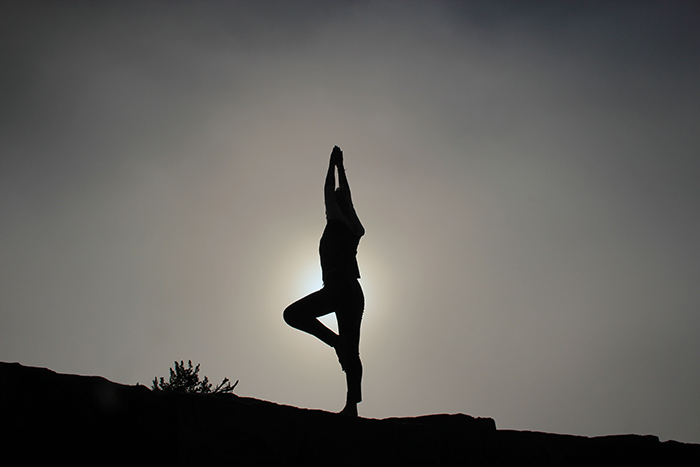

Feeling
good today?

Feel mentally better by doing this.
The benefits of Yoga
by Ashley DodsonThe benefits of yoga provide both instant gratification and lasting transformation. In the fitness world, both are extremely important. Too much time with too few results can be incredibly discouraging, and monotonous routines week after week can lead to stagnation. Yoga can change your physical and mental capacity quickly, while preparing the mind and body for long-term health.
Yoga is for everyone
Most yoga studios and local gyms offer yoga classes that are open to all generations and fitness levels. It’s exciting to enter a room full of young teens, athletes, middle-aged moms, older gentlemen, and even fitness buffs and body builders. Everyone can feel accepted and included and, unlike other sports or classes that focus on niche clients, yoga tends to offer open arms. Whether you like to say "Om" or you can’t stand the word “yogi”; whether you are 92, 53, or even 12, yoga can help you.
Yoga encourages overall health and wellness
Yoga is not just about working out, it’s about a healthy lifestyle. The practice of yoga allows students to find stillness in a world consumed with chaos. Peace and tranquility achieved through focused training appeals to everyone.
Yoga’s deep breathing and meditation practices help foster an inner shift from to-do lists, kids and spouse’s needs, financial concerns, and relationship struggles to something a little bit bigger than the issues you face. Yoga helps relieve stress and declutters the mind, helping you to become more focused.
Yoga has many faces
Tne of the benefits of yoga is that you can choose a yoga style that's tailored to your lifestyle, such as hot yoga, power yoga, relaxation yoga, prenatal yoga, etc. Whether you prefer to practice at home, in a private session, while watching a DVD or at a studio or gym, there are a huge variety of options available to suit your goals and needs.
If you're a yoga beginner, hatha yoga, which focuses on basic postures at a comfortable pace, would be great for you. If you want to increase strength through using more of your own body’s resistance, power yoga may be right for you. If you're ready for a deeper practice, Bikram, also called “hot yoga,” may be just what you're looking for. In Bikram yoga, the room temperature is set to around 105 degrees Fahrenheit, resulting in greater elimination of toxins from the body through the increased production of sweat. No matter your fitness level, fat percentage, or health history, yoga has a style for you.
Strength training and flexibility
Yoga’s focus on strength training and flexibility is an incredible benefit to your body. The postures are meant to strengthen your body from the inside out, so you don’t just look good, you feel good, too. Each of the yoga poses is built to reinforce the muscles around the spine, the very center of your body, which is the core from which everything else operates. When the core is working properly, posture is improved, thus alleviating back, shoulder, and neck pain.
The digestive system gets back on track when the stretching in yoga is coupled with a healthy, organic diet, which can relieve constipation, irritable bowel syndrome (IBS), and acid reflux. Another one of the benefits of yoga is that stretching and holding postures also causes muscles to lengthen, which gives the body a longer, leaner look.
How does power yoga build muscle?
Adapted from the basic Ashtanga yoga, power yoga requires increased energy, focus, and strength. Although power yoga evolved from the basics, it certainly is not a basic course.
How does it help build muscle? Most poses are held for five full breaths versus the usual one to three breaths. Muscles are challenged as the mind and body have to work together simultaneously to hold a position without giving up. Breathing, posing, moving, and increasing flexibility happen together at one time, which unearths a new level of discipline in your mind and body.
Power yoga and the core
Isometric exercises are one of the best ways to build core strength. Isometric, stemming from the words “same” and “length,” simply translates to holding one position without moving. Power yoga uses isometric exercises along with other postures that are designed to make the core and back stronger. Flexibility and balance stem from your core, so it's important to train this area of the body. In turn, you can increase the strength and health of your entire body. Generally a high-temperature room is used in this practice to help keep the muscles warm and release additional toxins from the body.
Power yoga’s effect on the body
Here's a list of some of the most beneficial aspects of power yoga:
- It increases endurance, strength, and flexibility.
- Mental endurance and physical stamina are tested through holding postures for extended breaths.
- Arm and shoulder strength is increased as you use your own body weight for resistance.
- Lats, traps, and other back muscles begin to support the spine better than before.
- Abdominals and obliques are refined and toned through building core muscles.
- Posture begins to correct itself over time.
- Hip flexors are stretched and strengthened.
- Glutes, quads, hamstrings, and calves are strengthened.